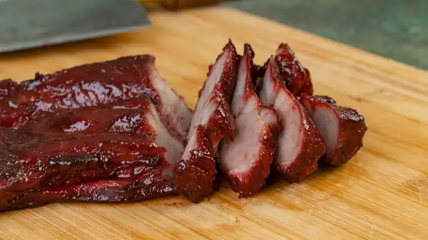

Char Siu

Recipe for Char Siu Pork
Pork shoulder or pork butt are the best cuts for making this recipe.
Ingredients for a serving size of 6
- 2lb pork shoulder
- 1tbsp garlic salt
- 4tbsp brown sugar
- 2tbsp oyster sauce
- 2tbsp light soy sauce
- 1tbsp hoisin sauce
- 2tbsp red wine
- 1tbsp shaoxing wine
- 1 cube red fermented bean curd
- 1tsp five spice powder
- 2tbsp honey
- 2tsp water
Prepare pork marinade
Mix the following ingredients in a bowl
1tbsp garlic salt
4tbsp brown sugar
2tbsp oyster sauce
2tbsp light soy sauce
2tbsp hoisin sauce
2tbsp red wine
1tbsp shaoxing wine
1 cube red fermented bean curd
1 tsp five spice powder
Directions
- Prepare & poke meat
- Marinate pork for 6-8 hours and no longer than 12 hours. Do not use all of the marinade as we will be lathering the charsiu during the cooking.
- Before baking, make sure pork is at room temperature. Preheat over to 425F (218C)
- Place the charsiu in a baking sheet lined with foil. Bake for 50minutes and lather the charsiu with the marinade every 15minutes.
- Lather charsiu once more and let it cool for a few minutes before cutting.